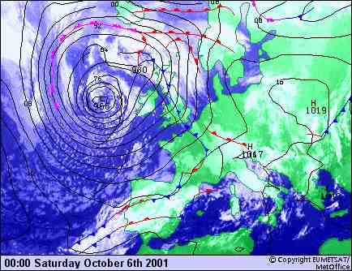
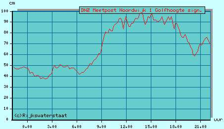

|
Hier de ligging van de drukgebieden tijdens de dagovergang van
vrijdag op zaterdag 6 oktober 2001. We kregen te maken met de
invloed van het
lagedrukgebied dat zich verplaatste in de richting van Ierland.
Dit lagedrukgebied verdrong het hogedrukgebied, dat het
weerbeeld bij ons vooraf bepaalde, richting Rusland.
Interpretatie:
Op het noordelijk halfrond is de windrichting t.o.v. een
lagedrukgebied, de isobaren volgend,
tegen de wijzers van de klok in. Tevens geldt: hoe steiler het
drukverloop tussen de isobaren, hoe krachtiger de wind ter
plaatse.
Dus:
Voor Katwijk betekende dit dat we op de wedstrijddag een stevige bries,
maar vooral ook de hieruit voortkomende golven, vanuit
zuidelijke richting konden verwachten.
|

|
Deze grafiek toont het het verloop van de golfhoogte
gedurende de wedstrijddag. Voor de organisatie een spannende
ontwikkeling:
-'s Nachts vooraf aan de wedstrijd windstil, absoluut geen
golven.
-7:00 uur. Vlakke zee echter de wind neemt voelbaar toe.
-10:00 uur. Verbetering in golfhoogte zichtbaar.
-12:00 uur. Wedstrijd wordt gestart.
-15:30 uur. Tijdstip dat de finale wordt gevaren.
-17:00 uur. Het stort weer in.
Dus achteraf gesproken: "Perfecte timing!"
|
|